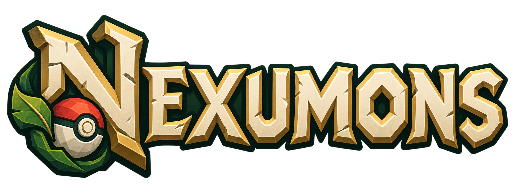
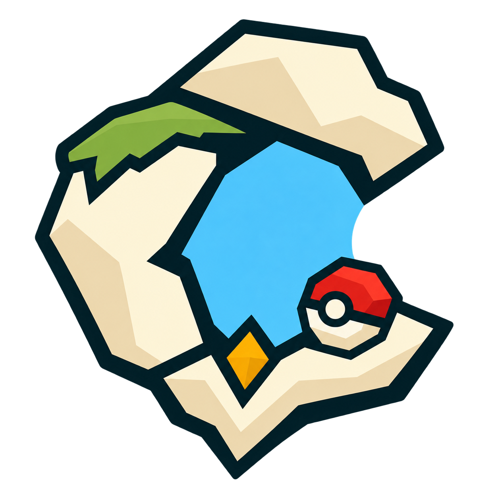

Survie & aventure

Un monde à explorer.
Une équipe à construire.
Bases protégées · Raids · Ligue
Statut en cours…
Le point de départ
Deux univers Cobblemon.
Choisis celui que tu veux rejoindre.

Un monde à explorer.
Une équipe à construire.
Bases protégées · Raids · Ligue

CobbloriaUne île à développer.
Tout un ciel à découvrir.
Quêtes · Habitats · Expéditions